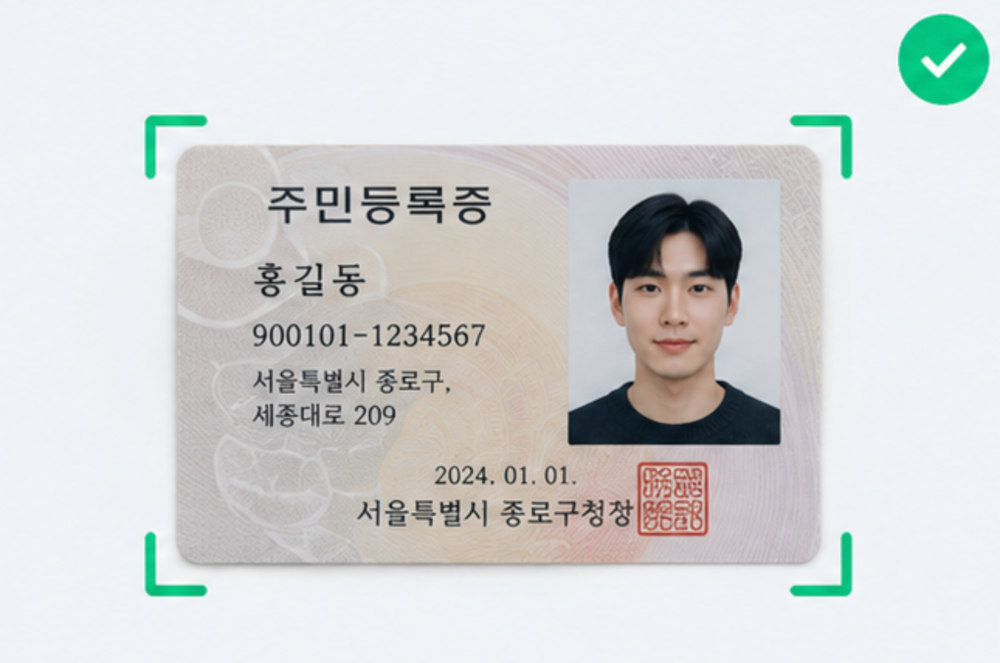
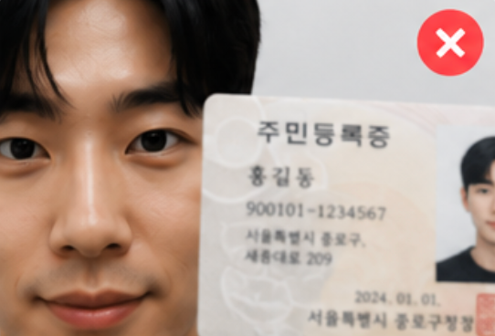
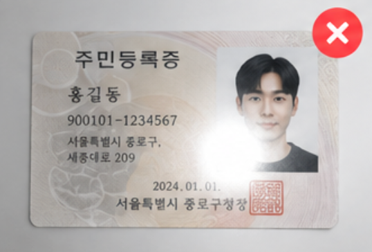
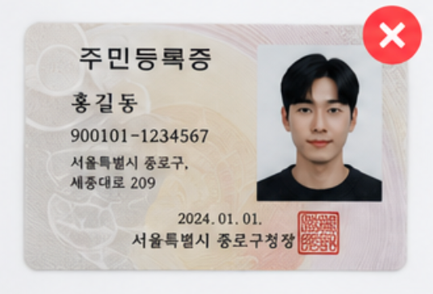

2차 KYC & 마이그레이션 안내 2nd KYC & Migration Guide
6월 22일 스냅샷 기준 500 VERY를 보유한 유저를 대상으로 진행됩니다. 아래 내용을 확인하고 기간 내에 KYC를 제출해 주세요. For users who held 500 VERY at the June 22 snapshot. Please review the details below and submit your KYC within the period.
대상 조건Eligibility
-
✓
6월 22일 스냅샷 시점 기준 500 VERY 보유Held 500 VERY as of the June 22 snapshot
-
✓
어뷰징으로 의심되는 계정은 제외Accounts suspected of abuse are excluded
-
✕
미성년자 참여 불가 · 중국·미국 국적은 KYC 불가Minors are not eligible · KYC is unavailable to Chinese and US nationals
신분증 안내Accepted ID
어떤 신분증을 쓸 수 있나요?Which ID can I use?
여권 · 주민등록증 · 운전면허증 Government-issued photo ID
Passport · National ID card · Driver's license
제출 사진 가이드Photo guide
이렇게 촬영해 주세요How to take your photos
신분증으로 얼굴을 가리지 말고, 얼굴과 신분증이 한 프레임에 모두 또렷하게 보이도록 촬영하세요.Don't let the ID cover your face — keep both your face and the ID clearly visible in one frame.

신분증만 가까이서, 네 모서리가 모두 보이고 글자가 선명하게 촬영하세요.The ID alone, up close, with all four corners in frame and the text sharp.
✅ 권장Do
- ✓밝은 곳에서, 빛 반사·그림자 없이 촬영Shoot in a well-lit place, free of glare and shadows
- ✓신분증 네 모서리가 모두 프레임 안에 보이게Keep all four corners of the ID inside the frame
- ✓글자가 또렷하게 읽히도록 초점 맞추기Focus so the text is clearly readable
⛔ 이런 사진은 피해주세요Avoid these — examples that get rejected



마이그레이션Migration
-
→
마이그레이션 시점에 보유한 VERY 전량이 베리월렛으로 마이그레이션됩니다Your entire VERY balance at the time of migration is migrated to your VeryWallet스냅샷(6/22)은 대상 자격 기준이며, 실제 마이그레이션 수량은 마이그레이션 시점의 잔액입니다.The June 22 snapshot only determines eligibility; the amount migrated is your balance at migration time.
-
⏱
제출 기간 종료 후 2주 이내 전체 대상자에게 일괄 마이그레이션Migrated to all qualified users in a single batch within 2 weeks after the submission period ends승인 직후 개별 마이그레이션이 아닙니다.Not migrated immediately after each approval.
-
!
VERY는 베리월렛으로만 마이그레이션됩니다 — 베리월렛이 없으면 KYC를 제출할 수 없습니다VERY is migrated only to your VeryWallet — without one, you cannot submit KYCKYC 제출 전에 베리월렛을 먼저 생성해 주세요.Please set up your VeryWallet before submitting KYC.
시작하기Where to start
KYC는 어디서 시작하나요?Where do I start KYC?
마이닝(채굴) 페이지 하단에 KYC 진입 배너가 표시됩니다. 배너를 눌러 제출을 시작하세요. The KYC entry banner appears at the bottom of the Mining page. Tap the banner to begin.
이미 KYC를 완료하셨다면Already completed KYC?
노드 KYC · 1차 KYC 완료자 안내For Node & 1st KYC completers
KYC를 다시 진행하실 필요는 없습니다. 다만 마이그레이션을 원하시면 마이그레이션 신청은 별도로 진행하셔야 합니다. You don't need to redo KYC. However, to receive your migration, you must still submit a migration request separately.
자주 묻는 질문FAQ